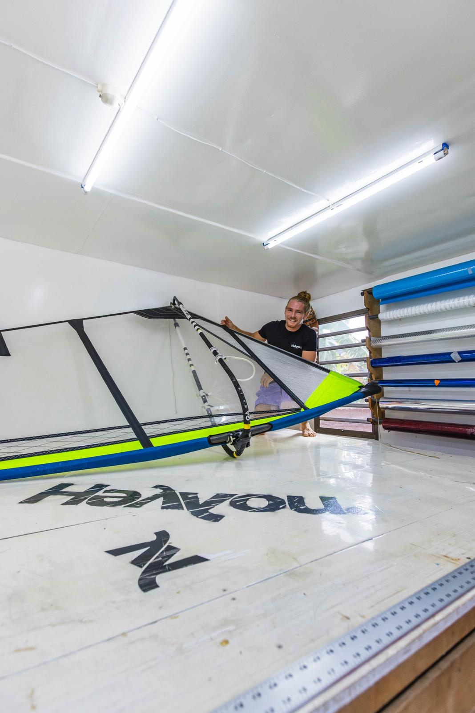

HeYYou · Bonaire
Custom windsurf sails,
handmade on Bonaire.
High-performance freestyle and wave sails, cut and stitched one at a time by pro windsurfer Youp Schmit.
Not a factory. A workshop.
Every HeYYou sail is cut, stitched and tuned by hand by the rider who competes on them.
The sail
Every panel,
by hand.
Carbon scrim, a clear monofilm window, neon panels and full-length battens, stitched one at a time. Scroll to turn it.

The maker
Youp Schmit
PWA World Tour freestyler. Back in 2013 he invented the DoubleAirCulo, still one of the hardest moves in the sport. Today he builds the sails he rides, on the island that taught him to ride.
Bonaire is his home spot and his test lab. What works on the water at Sorobon and Red Slave is what gets stitched into the next sail. His team riders, like Bjorn Saragoza, push them just as hard.
DoubleAirCulo, 2013
freestyle
on Bonaire
The craft
From a roll of film
to a finished rig.
Monofilm, carbon scrim and neon panels, measured, cut, and stitched on the workshop floor. No two sails leave the same.



In action
Built to be thrown.
Shovit Double Spock
Golden hour at Sorobon. Seven seconds, two rotations, one sail that holds the load.
The complete setup
HeYYou sail.
Flikka board.
The sail is ours, built on Bonaire. Paired with Flikka freestyle boards, it is the exact rig Youp competes on. Nothing on this page is a prototype. It all gets ridden.
Boards by @flikkaboards

Freestyle, limited
Limited Edition sails.
A small run of custom freestyle sails, made to order in the colors and sizes you ride. When they are gone, they are gone.
Reserve yours